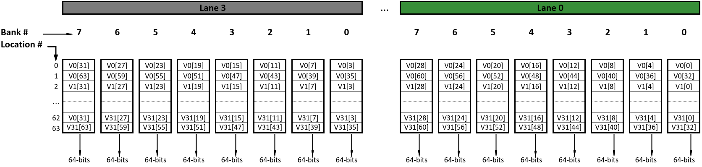
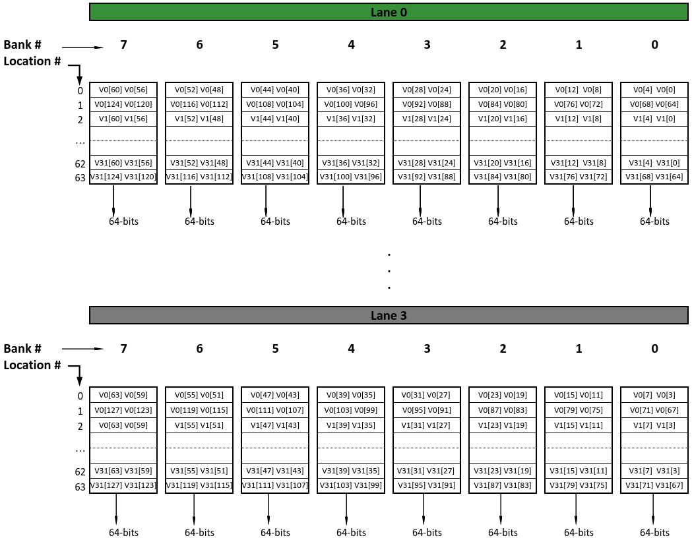

Sequencer¶
主要功能是管理和控制并行向量计算中的指令执行顺序和依赖关系，确保与Ara计算架构中各功能单元的接口协调工作。它通过记录和分析指令状态、冲突情况，优化计算资源的分配和提高执行效率。同时，模块实现了对未完成指令的等待与处理机制，以确保在复杂数据路径中的正确性。
运行中向量指令¶
- 运行中的向量指令管理：维护一个矩阵pe_vinsn_running_d和pe_vinsn_running_q，表示每个处理单元上运行的向量指令。
- 查找下一个ID：使用
lzc模块查找下一个可用的指令ID。 - 更新运行中的向量指令：在时钟上升沿更新运行中的向量指令状态。
- 通道同步停滞：检测并处理通道不同步的情况。
for (genvar i = 0; i < NrVInsn; i++) begin : gen_stall_lane_desynch
assign stall_lanes_desynch_vec[i] = ~pe_vinsn_running_q[0][i] & |pe_vinsn_running_q_trns[i][NrLanes-1:1];
end
assign stall_lanes_desynch = |stall_lanes_desynch_vec;
//如果任何一个车道（除了车道0）还在执行该操作，则结果为1。
//只有当车道0已完成该操作且至少有一个其他车道还在执行时，结果才为1，表示车道间出现了不同步。
全局冲突表¶
如果Insn N在某一列（假设为Insn M列）的值为1，则意味着Insn N依赖于Insn M的结果。换句话说，Insn N不能在Insn M执行完成并得到结果之前开始执行。
这里用到了SV的合并数组，既可以被当做数组也可以当成单独数据，logic[NrVInsn-1:0][NrVInsn-1:0] global_hazard_table_d;。
// Global table of the dependencies between instructions
//
// The row at index N is the hazard vector belonging to instruction N
// It indicates all the instruction on which instruction N depends
//
// For example, with the following table, instruction 3 depends on
// instruction 0 and instruction 2
//
// +--------+--------+--------+--------+--------+
// | - | Insn 0 | Insn 1 | Insn 2 | Insn 3 |
// +--------+--------+--------+--------+--------+
// | Insn 0 | 0 | 0 | 0 | 0 |
// | Insn 1 | 1 | 0 | 0 | 0 |
// | Insn 2 | 0 | 0 | 0 | 0 |
// | Insn 3 | 1 | 0 | 1 | 0 |
// +--------+--------+--------+--------+--------+
//
// This information is forwarded to the operand requesters of each lane
开始和结束通道¶
根据向量指令的起始位置和长度，以及向量元素宽度，计算出起始车道和结束车道的索引。
计算单次获取的元素数量：根据向量元素宽度（vsew）和车道数量（NrLanes）计算出单次获取的元素数量。
计算起始车道索引：通过vstart的余数确定起始车道的索引。
计算结束车道索引：通过vl的余数确定结束车道的索引，并减1以适应索引从0开始的特性。
unique case (pe_req_d.vtype.vsew)
EW8: begin
start_lane = &pe_req_d.vstart[$clog2(8*NrLanes)-1:$clog2(NrLanes)]
? pe_req_d.vstart[$clog2(NrLanes)-1:0]
: '0;//& 操作符用于检查高位是否全为1
buf8 = pe_req_d.vl[$clog2(8*NrLanes)-1:0] - 1;
end_lane = !(|buf8[$clog2(8*NrLanes)-1:$clog2(NrLanes)])//!(|buf) 用于检查缓冲区是否全为0
? pe_req_d.vl[$clog2(NrLanes)-1:0] - 1
: '1;
end
EW16: begin
start_lane = &pe_req_d.vstart[$clog2(4*NrLanes)-1:$clog2(NrLanes)]
? pe_req_d.vstart[$clog2(NrLanes)-1:0]
: '0;
buf16 = pe_req_d.vl[$clog2(4*NrLanes)-1:0] - 1;
end_lane = !(|buf16[$clog2(4*NrLanes)-1:$clog2(NrLanes)])
? pe_req_d.vl[$clog2(NrLanes)-1:0] - 1
: '1;
end
EW32: begin
start_lane = &pe_req_d.vstart[$clog2(2*NrLanes)-1:$clog2(NrLanes)]
? pe_req_d.vstart[$clog2(NrLanes)-1:0]
: '0;
buf32 = pe_req_d.vl[$clog2(2*NrLanes)-1:0] - 1;
end_lane = !(|buf32[$clog2(2*NrLanes)-1:$clog2(NrLanes)])
? pe_req_d.vl[$clog2(NrLanes)-1:0] - 1
: '1;
end
// EW64, default
default: begin
start_lane = pe_req_d.vstart[$clog2(NrLanes)-1:0];
end_lane = pe_req_d.vl[$clog2(NrLanes)-1:0] - 1;
end
endcase
end
VRF布局（ VLEN=4096 and 4 lanes）
sew=64时，VRF布局如下： 
sew=32时，VRF布局如下 
疑问？end_lane的计算
// EW64, default
default: begin
start_lane = pe_req_d.vstart[$clog2(NrLanes)-1:0];//vstart % NrLanes
end_lane = pe_req_d.vl[$clog2(NrLanes)-1:0] - 1;//(vl % NrLanes) - 1 不用加start_lane吗？
end
endcase
指令调度¶
- 返回每个指令对应的VFU
target_vfus
// This function determines all the targets VFUs of this operation and returns a vector.
// Asserted bits correspond to target VFUs.
// Unluckily, Verilator does not support assignment patterns with enum types on the indices
/*
hardware/include/ara_pkg.sv
localparam int unsigned NrVFUs = 7;
typedef enum logic [$clog2(NrVFUs)-1:0] {
VFU_Alu, VFU_MFpu, VFU_SlideUnit, VFU_MaskUnit, VFU_LoadUnit, VFU_StoreUnit, VFU_None
} vfu_e;
*/
function automatic logic [NrVFUs-1:0] target_vfus(ara_op_e op);
target_vfus = '0;
unique case (op) inside
[VADD:VFMVSF]:
for (int i = 0; i < NrVFUs; i++)
if (i == VFU_Alu) target_vfus[i] = 1'b1;//VFU_Alu是枚举类型，被当作int类型存储，默认从0开始
[VREDSUM:VWREDSUM]://整数归约操作
for (int i = 0; i < NrVFUs; i++)
if (i == VFU_Alu || i == VFU_SlideUnit) target_vfus[i] = 1'b1;
//更直观的写法是target_vfus[VFU_Alut] = 1'b1;target_vfus[VFU_SlideUnit] = 1'b1
//Verilator does not support assignment patterns with enum types on the indices所以使用另外的方法
[VFREDUSUM:VFWREDOSUM]://浮点归约操作
for (int i = 0; i < NrVFUs; i++)
if (i == VFU_MFpu || i == VFU_SlideUnit) target_vfus[i] = 1'b1;
[VMUL:VFCVTFF]:
for (int i = 0; i < NrVFUs; i++)
if (i == VFU_MFpu) target_vfus[i] = 1'b1;
[VMSEQ:VMXNOR]:
for (int i = 0; i < NrVFUs; i++)
if (i == VFU_Alu || i == VFU_MaskUnit) target_vfus[i] = 1'b1;
[VMFEQ:VMFGE]://浮点比较操作
for (int i = 0; i < NrVFUs; i++)
if (i == VFU_MFpu || i == VFU_MaskUnit) target_vfus[i] = 1'b1;
[VLE:VLXE]:
for (int i = 0; i < NrVFUs; i++)
if (i == VFU_LoadUnit) target_vfus[i] = 1'b1;
[VSE:VSXE]:
for (int i = 0; i < NrVFUs; i++)
if (i == VFU_StoreUnit) target_vfus[i] = 1'b1;
[VSLIDEUP:VSLIDEDOWN]:
for (int i = 0; i < NrVFUs; i++)
if (i == VFU_SlideUnit) target_vfus[i] = 1'b1;
[VMVXS:VFMVFS]:
for (int i = 0; i < NrVFUs; i++)
if (i == VFU_None) target_vfus[i] = 1'b1;
endcase
endfunction : target_vfus
- 定义VFU的指令队列
InsnQueueDepth
localparam int unsigned InsnQueueDepth [NrVFUs] = '{
ValuInsnQueueDepth,
MfpuInsnQueueDepth,
SlduInsnQueueDepth,
MaskuInsnQueueDepth,
VlduInsnQueueDepth,
VstuInsnQueueDepth,
NoneInsnQueueDepth
};
- 更新读写列表
利用write_list和read_list进行冒险检查 RAW、WAR、WAW
// RAW 如果用到了源操作数则检查是否正在被写入，如果正在被写入则设置hazard位
// WAR 如果用到了目的操作数则检查是否正在被读，如果正在被读则设置hazard位
if (ara_req_i.use_vs1) pe_req_d.hazard_vs1[write_list_d[ara_req_i.vs1].vid] |=
write_list_d[ara_req_i.vs1].valid;
if (ara_req_i.use_vs2) pe_req_d.hazard_vs2[write_list_d[ara_req_i.vs2].vid] |=
write_list_d[ara_req_i.vs2].valid;
if (!ara_req_i.vm) pe_req_d.hazard_vm[write_list_d[VMASK].vid] |=
write_list_d[VMASK].valid;
// WAR 如果目标操作数vd正在被读取，则不论是哪个源操作数或向量掩码，都可能受到影响，因此都设置对应的冒险位。
if (ara_req_i.use_vd) begin
pe_req_d.hazard_vs1[read_list_d[ara_req_i.vd].vid] |= read_list_d[ara_req_i.vd].valid;
pe_req_d.hazard_vs2[read_list_d[ara_req_i.vd].vid] |= read_list_d[ara_req_i.vd].valid;
pe_req_d.hazard_vm[read_list_d[ara_req_i.vd].vid] |= read_list_d[ara_req_i.vd].valid;
end
// WAW
if (ara_req_i.use_vd) pe_req_d.hazard_vd[write_list_d[ara_req_i.vd].vid] |=
write_list_d[ara_req_i.vd].valid;
- 发射 管理冒险检测和指令准备过程，确保了向量指令在向量处理器中的正确和高效执行。通过检查冒险位和指令的特定条件，它决定了哪些指令可以安全地发布给执行单元，哪些需要等待，以及如何更新执行状态表和读写列表
- 更新全局冒险表